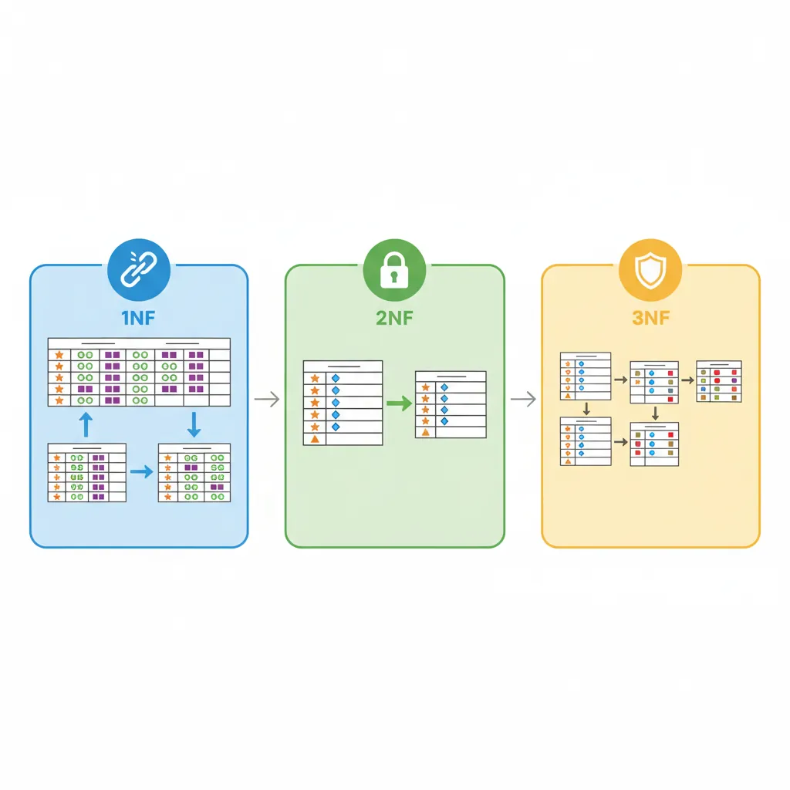
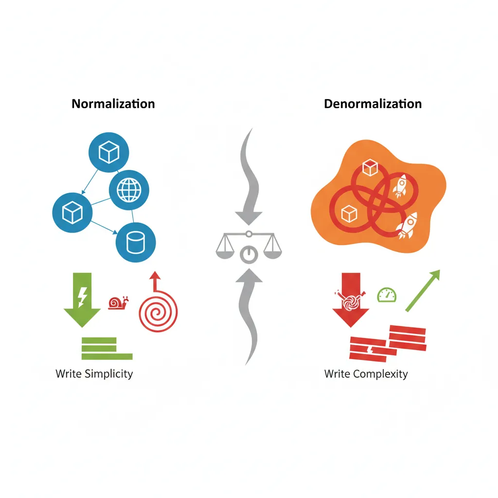

We use cookies to enhance your browsing experience, serve personalized content, and analyze our traffic.
By clicking "Accept All", you consent to our use of cookies. See our
Privacy Policy
for more information.
Complete Database Mastery Part 7: Data Modeling & Normalization
January 31, 2026Wasil Zafar40 min read
Master architect-level database design. Learn conceptual, logical, and physical modeling, Entity Relationship Diagrams, normal forms from 1NF to BCNF, denormalization tradeoffs, and real-world schema patterns.
Data modeling is the foundation of database design. A well-designed schema ensures data integrity, enables efficient queries, and scales gracefully as your application grows.
Series Context: This is Part 7 of 15 in the Complete Database Mastery series. We're elevating from SQL skills to architect-level database design.
Think of data modeling like architecture for a building—you need blueprints before construction. A poorly designed database leads to performance problems, data inconsistencies, and constant refactoring.
Signs of Poor Data Modeling
Same data stored in multiple places (update one, forget another)
Queries require complex workarounds
Adding features requires major schema changes
NULL values everywhere, unclear what they mean
Performance degrades as data grows
Key Principle: Model your data based on how it will be queried, not just how it looks in the real world. The best schema depends on your access patterns.
Modeling Approaches
Conceptual Modeling (What)
High-level view of business entities and relationships. No technical details—focuses on what data exists.
Database-specific implementation: exact data types, indexes, partitioning, storage parameters.
-- Physical: PostgreSQL-specific implementation
CREATE TABLE customers (
customer_id BIGSERIAL PRIMARY KEY,
name VARCHAR(100) NOT NULL,
email VARCHAR(255) UNIQUE NOT NULL,
created_at TIMESTAMP WITH TIME ZONE DEFAULT NOW()
);
CREATE INDEX idx_customers_email ON customers(email);
CREATE TABLE orders (
order_id BIGSERIAL PRIMARY KEY,
customer_id BIGINT NOT NULL REFERENCES customers(customer_id),
order_date DATE NOT NULL DEFAULT CURRENT_DATE,
status VARCHAR(20) DEFAULT 'pending' CHECK (status IN ('pending', 'shipped', 'delivered', 'cancelled')),
total DECIMAL(12,2) NOT NULL
) PARTITION BY RANGE (order_date);
CREATE INDEX idx_orders_customer ON orders(customer_id);
CREATE INDEX idx_orders_date ON orders(order_date);
Entity Relationship Diagrams (ERDs)
ERDs visualize database structure. They show entities (tables), attributes (columns), and relationships (foreign keys).
-- One-to-One: User Profile (separate for privacy/performance)
CREATE TABLE users (
id SERIAL PRIMARY KEY,
email VARCHAR(255) UNIQUE NOT NULL
);
CREATE TABLE user_profiles (
user_id INT PRIMARY KEY REFERENCES users(id),
bio TEXT,
avatar_url VARCHAR(500)
);
-- One-to-Many: Customer Orders
CREATE TABLE customers (id SERIAL PRIMARY KEY, name VARCHAR(100));
CREATE TABLE orders (
id SERIAL PRIMARY KEY,
customer_id INT NOT NULL REFERENCES customers(id), -- FK here
total DECIMAL(10,2)
);
-- Many-to-Many: Order Products (junction table)
CREATE TABLE products (id SERIAL PRIMARY KEY, name VARCHAR(100));
CREATE TABLE order_items (
order_id INT REFERENCES orders(id),
product_id INT REFERENCES products(id),
quantity INT NOT NULL DEFAULT 1,
PRIMARY KEY (order_id, product_id) -- Composite PK
);
Normal Forms
Normalization eliminates redundancy and ensures data integrity. Each normal form builds on the previous one.

Normalization progression: eliminating repeating groups (1NF), partial dependencies (2NF), and transitive dependencies (3NF)
First Normal Form (1NF): Atomic Values
Each column contains only atomic (indivisible) values. No repeating groups or arrays.
-- ❌ Violates 1NF: Multiple values in one column
CREATE TABLE orders_bad (
order_id INT,
customer VARCHAR(100),
products VARCHAR(500) -- "iPhone, iPad, MacBook"
);
-- ✅ 1NF: Atomic values, one product per row
CREATE TABLE order_items_1nf (
order_id INT,
customer VARCHAR(100),
product VARCHAR(100)
);
-- But this has redundancy... customer repeated for every item!
Second Normal Form (2NF): No Partial Dependencies
1NF + every non-key column depends on the entire primary key (not just part of it).
-- ❌ Violates 2NF: customer depends only on order_id, not product
-- PK is (order_id, product) but customer doesn't need product
CREATE TABLE orders_bad (
order_id INT,
product VARCHAR(100),
customer VARCHAR(100), -- Partial dependency!
quantity INT,
PRIMARY KEY (order_id, product)
);
-- ✅ 2NF: Separate tables
CREATE TABLE orders_2nf (
order_id INT PRIMARY KEY,
customer VARCHAR(100)
);
CREATE TABLE order_items_2nf (
order_id INT,
product VARCHAR(100),
quantity INT,
PRIMARY KEY (order_id, product),
FOREIGN KEY (order_id) REFERENCES orders_2nf(order_id)
);
Third Normal Form (3NF): No Transitive Dependencies
2NF + no non-key column depends on another non-key column.
-- ❌ Violates 3NF: customer_city depends on customer_id, not order_id
CREATE TABLE orders_bad (
order_id INT PRIMARY KEY,
customer_id INT,
customer_city VARCHAR(100) -- Transitive: order→customer→city
);
-- ✅ 3NF: City belongs with customer
CREATE TABLE customers_3nf (
customer_id INT PRIMARY KEY,
name VARCHAR(100),
city VARCHAR(100)
);
CREATE TABLE orders_3nf (
order_id INT PRIMARY KEY,
customer_id INT REFERENCES customers_3nf(customer_id),
total DECIMAL(10,2)
);
Boyce-Codd Normal Form (BCNF)
A stricter version of 3NF. Every determinant (column that determines others) must be a candidate key.
-- Example: Course scheduling
-- Student can take one course per semester
-- Each course is taught by one professor
-- Each professor teaches only one course
-- ❌ Anomaly: Professor determines Course, but Professor isn't a key
CREATE TABLE enrollments_bad (
student_id INT,
semester VARCHAR(20),
professor VARCHAR(100),
course VARCHAR(100), -- Determined by professor!
PRIMARY KEY (student_id, semester)
);
-- ✅ BCNF: Separate professor-course relationship
CREATE TABLE professor_courses (
professor VARCHAR(100) PRIMARY KEY,
course VARCHAR(100) NOT NULL
);
CREATE TABLE enrollments_bcnf (
student_id INT,
semester VARCHAR(20),
professor VARCHAR(100) REFERENCES professor_courses(professor),
PRIMARY KEY (student_id, semester)
);
Practical Rule: Most applications target 3NF. BCNF is occasionally needed for complex business rules. Higher normal forms (4NF, 5NF) are rarely used in practice.
Denormalization Tradeoffs
Denormalization intentionally adds redundancy to improve read performance. It trades storage space and write complexity for faster queries.

Normalization vs denormalization tradeoffs: balancing write simplicity against read performance
Normalization vs Denormalization
Aspect
Normalized
Denormalized
Storage
Less (no redundancy)
More (duplicated data)
Write Speed
Faster (update one place)
Slower (update many places)
Read Speed
Slower (more JOINs)
Faster (data co-located)
Consistency
Guaranteed
Must maintain manually
Best For
OLTP, frequent updates
OLAP, read-heavy workloads
-- Normalized: Separate product details
-- Query requires JOIN
SELECT o.order_id, p.name, p.price
FROM orders o
JOIN order_items oi ON o.order_id = oi.order_id
JOIN products p ON oi.product_id = p.product_id
WHERE o.customer_id = 123;
-- Denormalized: Store product snapshot in order_items
CREATE TABLE order_items_denorm (
order_id INT,
product_id INT,
quantity INT,
-- Denormalized: snapshot of product at order time
product_name VARCHAR(100),
unit_price DECIMAL(10,2),
PRIMARY KEY (order_id, product_id)
);
-- Benefits:
-- 1. Faster queries (no JOIN needed)
-- 2. Historical accuracy (price at time of order)
-- Downside: product_name won't update if product renamed
When to Denormalize: Only after proving normalized schema is too slow. Profile first, then denormalize specific hotspots. Consider materialized views as an alternative.
Designing for Scalability
-- 1. Use surrogate keys (not natural keys)
-- ✅ Good: system-generated ID
CREATE TABLE users (
id BIGSERIAL PRIMARY KEY, -- Can handle billions
email VARCHAR(255) UNIQUE
);
-- ❌ Risky: natural key that might change
CREATE TABLE users_bad (
email VARCHAR(255) PRIMARY KEY -- What if user changes email?
);
-- 2. Prepare for partitioning
-- Include partition key in primary key
CREATE TABLE events (
id BIGSERIAL,
event_date DATE NOT NULL,
data JSONB,
PRIMARY KEY (id, event_date) -- Include partition key
) PARTITION BY RANGE (event_date);
-- 3. Avoid wide tables
-- Split into logical groups
CREATE TABLE user_core (id BIGINT PRIMARY KEY, email VARCHAR(255));
CREATE TABLE user_profile (user_id BIGINT PRIMARY KEY, bio TEXT, avatar_url VARCHAR(500));
CREATE TABLE user_settings (user_id BIGINT PRIMARY KEY, preferences JSONB);
-- 4. Use appropriate data types
-- INT vs BIGINT: Know your scale
-- VARCHAR(n) vs TEXT: PostgreSQL treats them similarly
-- DECIMAL vs FLOAT: DECIMAL for money, FLOAT for science
Real-World Schema Modeling
E-Commerce Schema
-- Core E-Commerce Schema
CREATE TABLE customers (
id BIGSERIAL PRIMARY KEY,
email VARCHAR(255) UNIQUE NOT NULL,
password_hash VARCHAR(255) NOT NULL,
created_at TIMESTAMP DEFAULT NOW()
);
CREATE TABLE addresses (
id BIGSERIAL PRIMARY KEY,
customer_id BIGINT REFERENCES customers(id),
type VARCHAR(20) CHECK (type IN ('billing', 'shipping')),
street VARCHAR(255),
city VARCHAR(100),
postal_code VARCHAR(20),
country CHAR(2)
);
CREATE TABLE products (
id BIGSERIAL PRIMARY KEY,
sku VARCHAR(50) UNIQUE NOT NULL,
name VARCHAR(255) NOT NULL,
price DECIMAL(10,2) NOT NULL,
inventory_count INT DEFAULT 0,
category_id BIGINT REFERENCES categories(id)
);
CREATE TABLE orders (
id BIGSERIAL PRIMARY KEY,
customer_id BIGINT REFERENCES customers(id),
status VARCHAR(20) DEFAULT 'pending',
shipping_address_id BIGINT REFERENCES addresses(id),
total DECIMAL(12,2),
created_at TIMESTAMP DEFAULT NOW()
);
CREATE TABLE order_items (
order_id BIGINT REFERENCES orders(id),
product_id BIGINT REFERENCES products(id),
quantity INT NOT NULL,
unit_price DECIMAL(10,2) NOT NULL, -- Snapshot at order time
PRIMARY KEY (order_id, product_id)
);
Banking/Financial Schema
-- Banking: Every transaction must be traceable
CREATE TABLE accounts (
id BIGSERIAL PRIMARY KEY,
account_number VARCHAR(20) UNIQUE NOT NULL,
customer_id BIGINT REFERENCES customers(id),
account_type VARCHAR(20) CHECK (account_type IN ('checking', 'savings', 'credit')),
balance DECIMAL(15,2) NOT NULL DEFAULT 0,
currency CHAR(3) DEFAULT 'USD',
created_at TIMESTAMP DEFAULT NOW()
);
-- Double-entry bookkeeping: Every transaction has debit AND credit
CREATE TABLE transactions (
id BIGSERIAL PRIMARY KEY,
transaction_date TIMESTAMP DEFAULT NOW(),
description VARCHAR(255)
);
CREATE TABLE transaction_entries (
id BIGSERIAL PRIMARY KEY,
transaction_id BIGINT REFERENCES transactions(id),
account_id BIGINT REFERENCES accounts(id),
entry_type VARCHAR(10) CHECK (entry_type IN ('debit', 'credit')),
amount DECIMAL(15,2) NOT NULL,
CHECK (amount > 0)
);
-- Constraint: debits must equal credits (enforced by trigger)
Social Media Schema
-- Social: Optimized for feeds and relationships
CREATE TABLE users (
id BIGSERIAL PRIMARY KEY,
username VARCHAR(50) UNIQUE NOT NULL,
display_name VARCHAR(100)
);
-- Self-referencing many-to-many for follows
CREATE TABLE follows (
follower_id BIGINT REFERENCES users(id),
following_id BIGINT REFERENCES users(id),
created_at TIMESTAMP DEFAULT NOW(),
PRIMARY KEY (follower_id, following_id),
CHECK (follower_id != following_id) -- Can't follow yourself
);
CREATE TABLE posts (
id BIGSERIAL PRIMARY KEY,
user_id BIGINT REFERENCES users(id),
content TEXT NOT NULL,
created_at TIMESTAMP DEFAULT NOW()
);
-- Denormalized counters for performance
ALTER TABLE posts ADD COLUMN like_count INT DEFAULT 0;
ALTER TABLE posts ADD COLUMN comment_count INT DEFAULT 0;
ALTER TABLE users ADD COLUMN follower_count INT DEFAULT 0;
Data Integrity & Constraints
-- NOT NULL: Required fields
CREATE TABLE products (
id SERIAL PRIMARY KEY,
name VARCHAR(100) NOT NULL,
price DECIMAL(10,2) NOT NULL
);
-- UNIQUE: No duplicates
ALTER TABLE users ADD CONSTRAINT unique_email UNIQUE (email);
-- CHECK: Domain validation
CREATE TABLE orders (
id SERIAL PRIMARY KEY,
quantity INT CHECK (quantity > 0),
status VARCHAR(20) CHECK (status IN ('pending', 'shipped', 'delivered'))
);
-- FOREIGN KEY: Referential integrity
-- ON DELETE options:
-- CASCADE: Delete related rows
-- SET NULL: Set FK to NULL
-- RESTRICT: Prevent delete if referenced
CREATE TABLE order_items (
order_id INT REFERENCES orders(id) ON DELETE CASCADE,
product_id INT REFERENCES products(id) ON DELETE RESTRICT
);
-- EXCLUSION: Prevent overlapping ranges (PostgreSQL)
CREATE TABLE room_bookings (
room_id INT,
during TSRANGE,
EXCLUDE USING gist (room_id WITH =, during WITH &&)
);
Schema Evolution Planning
Schemas change over time. Plan for evolution without breaking existing applications.
-- Safe column additions (backward compatible)
ALTER TABLE users ADD COLUMN phone VARCHAR(20); -- Nullable by default
-- Dangerous: Adding NOT NULL without default
-- ALTER TABLE users ADD COLUMN age INT NOT NULL; -- FAILS if rows exist!
-- Safe approach: Add nullable, backfill, then constrain
ALTER TABLE users ADD COLUMN age INT;
UPDATE users SET age = 0 WHERE age IS NULL;
ALTER TABLE users ALTER COLUMN age SET NOT NULL;
ALTER TABLE users ALTER COLUMN age SET DEFAULT 0;
-- Renaming columns: Create view for backward compatibility
ALTER TABLE users RENAME COLUMN name TO full_name;
CREATE VIEW users_v1 AS SELECT id, full_name AS name, email FROM users;
-- Soft deprecation: Add new column, keep old
ALTER TABLE products ADD COLUMN price_cents BIGINT; -- New: cents
-- Old 'price' DECIMAL column stays until migration complete
Migration Strategy: Use tools like Flyway, Liquibase, or Alembic to version control schema changes. Every change should be reversible.
Conclusion & Next Steps
Data modeling is both art and science. Understanding normal forms, knowing when to denormalize, and designing for real-world requirements are skills that distinguish database architects from developers.
Continue the Database Mastery Series
Part 6: Query Optimization & Indexing
Optimize queries against your well-designed schemas.